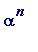
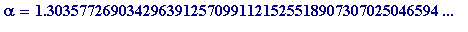
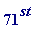
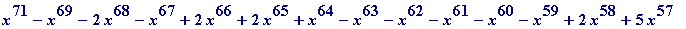
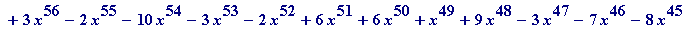
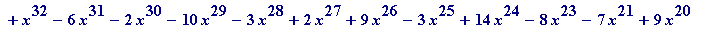
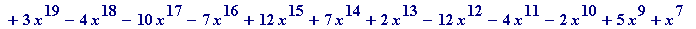
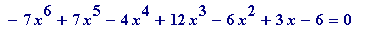
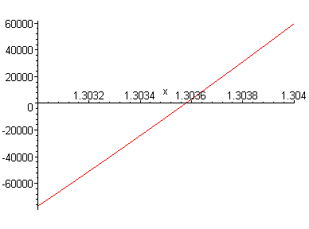

Conway's Look-and-Say algebraic number
Perhaps the most remarkable example of an algebraic number (from a gee-whiz point of view) is provided by John Conway's
Look
-and-
Say
sequence (see the wonderful
Book of Numbers
by Conway & Guy):
1, 11, 21, 1211, 111221, 312211, 13112221, 1113213211, 31131211121221, ...
I hope you see why it's called the Look-and-Say sequence... (If you don't already know of N. J. A. Sloane's extraordinary On-Line Encyclopedia of Integer Sequences, then you simply must consult it; be prepared, however, to suffer the disappointment of thinking you've discovered a new (
interesting
) sequence: you will almost certainly find it there...).
How many digits does the
n
-th term of that sequence have? Conway proved that it's roughly proportional to

, where

, is an algebraic number of degree 71, being a solution of the following irreducible

degree polynomial equation (with integer coefficients):





>
restart;
>
f := x -> x^71 - x^69 - 2*x^68 - x^67 + 2*x^66 + 2*x^65 + x^64
- x^63 - x^62 - x^61 - x^60 - x^59 + 2*x^58 + 5*x^57 + 3*x^56
- 2*x^55 - 10*x^54 - 3*x^53 - 2*x^52 + 6*x^51 + 6*x^50 + x^49
+ 9*x^48 - 3*x^47 - 7*x^46 - 8*x^45 - 8*x^44 + 10*x^43 + 6*x^42
+ 8*x^41 - 5*x^40 - 12*x^39 + 7*x^38 - 7*x^37 + 7*x^36 + x^35
- 3*x^34 + 10*x^33 + x^32 - 6*x^31 - 2*x^30 - 10*x^29 - 3*x^28
+ 2*x^27 + 9*x^26 - 3*x^25 + 14*x^24 - 8*x^23 - 7*x^21 + 9*x^20
+ 3*x^19 - 4*x^18 - 10*x^17 - 7*x^16 + 12*x^15 + 7*x^14 + 2*x^13
- 12*x^12 - 4*x^11 - 2*x^10 + 5*x^9 + x^7 - 7*x^6 + 7*x^5 - 4*x^4
+ 12*x^3 - 6*x^2 + 3*x - 6:
>
Digits := 50; # to give the value in Conway & Guy
>
fsolve(f(x) = 0, x = 1..2);
>
Digits := 10;
>
plot(f(x), x = (1.303)..(1.304));

>